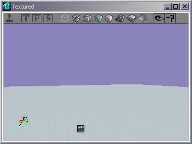
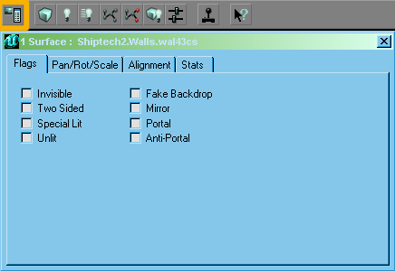
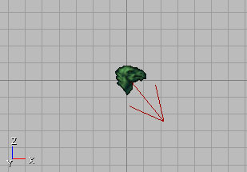

Adding Sunlight
This page is one of a sequence of Mapping Lessons.
Sunlight has one tricky property which confounded me for about an hour making my first terrain. The light from a Sunlight will be blocked by the main subtracted brush itself unless you set its walls to Fake Backdrop. A fake backdrop is used in outdoor areas to make the skybox texture visible in the map. To set this property, click on a wall in the 3D preview window, then hit the Shift-B key combination to select all the faces of the brush. This is what that should look like in the 3D viewport.

|
On the selected walls do Surface Context Menu → Surface Properties, and in the surface properties window check the Fake Backdrop checkbox.

Caption |
Adding the Sunlight
Add an Actor >> Light >> Sunlight to your level. I like to move it up near the top of the subtracted cube. You'll also want to rotate it so the arrow points in the direction you want the light to shine. Note: in later builds of UT2003, the "eagle-head" icon as seen below has been replaced by a yellow ball icon, to look like a sun. Don't let this throw you.

|
Now if you rebuild your level the terrain will be visible in the 3D viewport in Dynamic Lighting mode. The default settings for the Sunlight are a little dim, so you may want to increase the lighting brightness & play with the color if you want.
![[tutorial-terrain-17-Flat-Terrain-Dynamic-Lig]](images/tutorial-terrain-17-flat-te.jpeg) |
Next Lesson:
Related Topics
Discussion
Mr. Neutron: Hope I'm doing this right (editing whole document to add a comment). I didn't understand you saying that subtract brushes "block" sunlight without fake backdrop. What do you mean? Did it not work at all, or did the walls get funny lighting or what? I can't see how this would effect the lighting on the terrain.
Birelli: I'm not positive but I believe the reason that you might think that the large subtractive brush is actually "blocking" the light is that in order to get SunLight, you need to have walls set to fake backdrop for it to come "from". I think it's easier just to think of it as that light comes "out of your skybox" and is transmitted through the fake backdrop walls, although this is most definitely not true in a technical sense.
CCFreak2K: If you go to Creating A Terrain, you'll see that your sunlight actor should be placed in your level, not in your skybox (this is noted further down in that page). You might also want to note that your box without fakebackdrop is much like a solid wall, and I can't remember the last time I saw sunlight go though a solid wall.
Bob_The_Beheader: Wait. I'm confused. Which brushes are you setting to fake backdrop? I hope no one minds me explaining what a fake backdrop is in this lesson. I basically copied the explaination from Surface Flags (UT)
Guest: The way I think of it is that when you subtract a space, you are creating its internal ceiling, floor, and four walls. You can place various textures on these. You can also set "fake backdrop" to make the wall "invisible". At runtime, the player will not be aware of the wall unless he/she collides with it, as the renderer will draw the skybox in its place.
Tarquin: IIRC, you should imagine that the sunlight is coming from infinitely far away, and that even though your Sunlight actor is IN your map, the light is coming from outside the subtracted area. So it needs to get through the "ceiling" of your area, so that has to be set to Fake Backdrop to let the light through.
Moofed: If your meshes suddenly start to flicker really badly and you have serveral Sunlight actors, try deleting some. Once I had only 4 Sunlights the flickering went away.
Unknown: (Regarding the "add the Sunlight actor" step) How exactly do you do this? Please fill in the gaps in this explanation.
SuperApe: The link Add an Actor, as you found out, is a Basic Procedure, a foundational building block of knowledge in using the editor that will be used in many different tutorials on this wiki. As such, it has been categorized as a "first step" for beginning users of the Unreal Editor. Once you've mastered that knowledge (and the associated terminology used here on the wiki), you will find this becomes second nature. Explaining this basic step (or several others covered in the Basic Procedure pages), would not only appear redundant, but cluttered and eventually disorganized to more experienced users. As a side note, please keep your opinions in the Discussion section of the page.